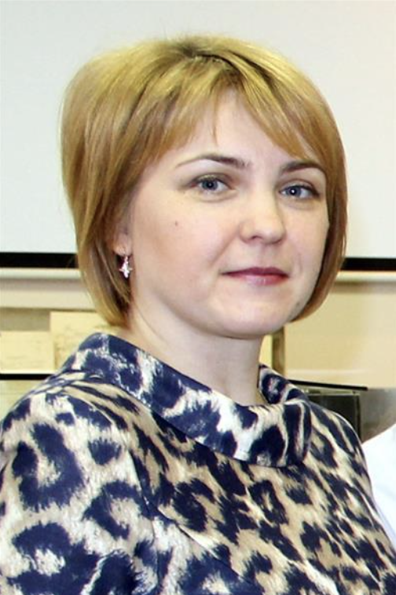
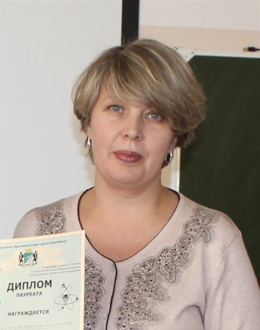
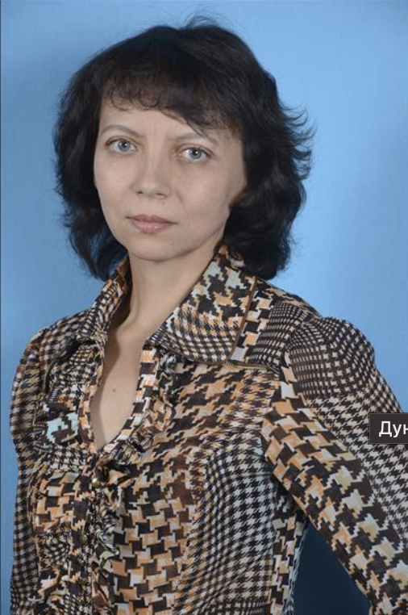
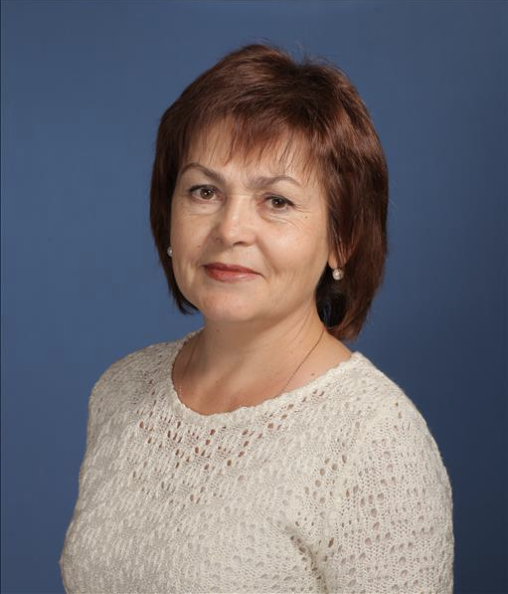
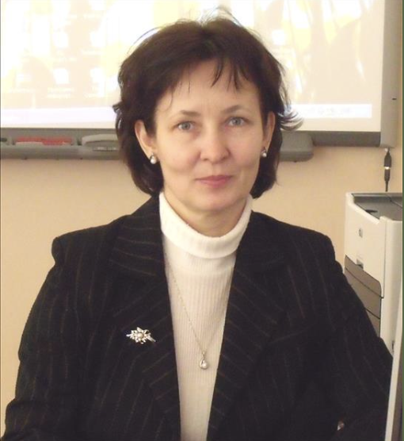

Предмет: История и обществознание
Ученая степень:Не указано
Ученое звание:Не указано
Общий стаж работы:4 года
Педагогический стаж:4 года
Стаж работы по специальности4 года
Стаж работы в данной ОО:4 года
Основное и/или среднее общее образование
Предмет: История и обществознание
Ученая степень:Не указано
Ученое звание:Не указано
Общий стаж работы:4 года
Педагогический стаж:4 года
Стаж работы по специальности4 года
Стаж работы в данной ОО:4 года
Предмет: Математика
Ученая степень:Не указано
Ученое звание:Не указано
Общий стаж работы:4 года
Педагогический стаж:4 года
Стаж работы по специальности4 года
Стаж работы в данной ОО:4 года

Предмет:Музыка,компьютерная графика
Ученая степень:Не указано
Ученое звание:Не указано
Общий стаж работы:30 года
Педагогический стаж:28 года
Стаж работы по специальности28 года
Стаж работы в данной ОО:23 года
Предмет: Русский язык и литература
Ученая степень:Не указано
Ученое звание:Не указано
Общий стаж работы:30 года
Педагогический стаж:28 года
Стаж работы по специальности28 года
Стаж работы в данной ОО:23 года
Предмет:Химия, биология
Ученая степень:Не указано
Ученое звание:Не указано
Общий стаж работы:21 год
Педагогический стаж:7 лет
Стаж работы по специальности7 лет
Стаж работы в данной ОО:1 год

Предмет:Русский язык и литература
Ученая степень:Не указано
Ученое звание:"Отличник просвещения"
Общий стаж работы:32 года
Педагогический стаж:32 года
Стаж работы по специальности32 года
Стаж работы в данной ОО:11 лет
Предмет:ИЗО
Ученая степень:Не указано
Ученое звание:Не указано
Общий стаж работы:40 лет
Педагогический стаж:36 лет
Стаж работы по специальности36 лет
Стаж работы в данной ОО:18 лет
Предмет:История и обществознание
Ученая степень:Не указано
Ученое звание:Не указано
Общий стаж работы:10 лет
Педагогический стаж:10 лет
Стаж работы по специальности10 лет
Стаж работы в данной ОО:10 лет

Предмет:Иностранные языки (французский, немецкий)
Ученая степень:Не указано
Ученое звание:Не указано
Общий стаж работы:40 лет
Педагогический стаж:40 лет
Стаж работы по специальности40 лет
Стаж работы в данной ОО:37 лет
Предмет:Физика
Ученая степень:Не указано
Ученое звание:Не указано
Общий стаж работы:20 лет
Педагогический стаж:14 лет
Стаж работы по специальности14 лет
Стаж работы в данной ОО:8 лет

Предмет:Педагог дополнительного образования
Ученая степень:Не указано
Ученое звание:Не указано
Общий стаж работы:44 года
Педагогический стаж:36 лет
Стаж работы по специальности36 лет
Стаж работы в данной ОО:26 лет
Предмет:Физика
Ученая степень:Не указано
Ученое звание:Не указано
Общий стаж работы:14 лет
Педагогический стаж:2 года
Стаж работы по специальности11 лет
Стаж работы в данной ОО:2 года
Предмет:КЛА, индивидуальный проект, спецкурс
Ученая степень:Не указано
Ученое звание:Почётный работник сферы образования Российской Федерации
Общий стаж работы:38 лет
Педагогический стаж:37 лет
Стаж работы по специальности37 лет
Стаж работы в данной ОО:37 лет
Предмет:Основы безопасности и защиты Родины
Ученая степень:Не указано
Ученое звание:Не указано
Общий стаж работы:29 лет
Педагогический стаж:29 лет
Стаж работы по специальности29 лет
Стаж работы в данной ОО:7 лет

Предмет:Информатика
Ученая степень:Не указано
Ученое звание:Отличник просвещения
Общий стаж работы:40 лет
Педагогический стаж:30 лет
Стаж работы по специальности30 лет
Стаж работы в данной ОО:19 лет
Предмет:Русский язык, литература
Ученая степень:Не указано
Ученое звание:Почётный работник общего образования Российской Федерации
Общий стаж работы:41 год
Педагогический стаж:36 лет
Стаж работы по специальности36 лет
Стаж работы в данной ОО:5 лет